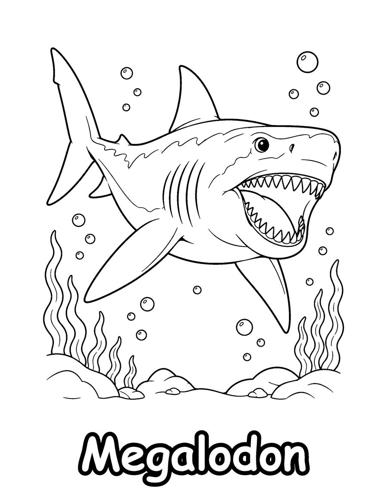
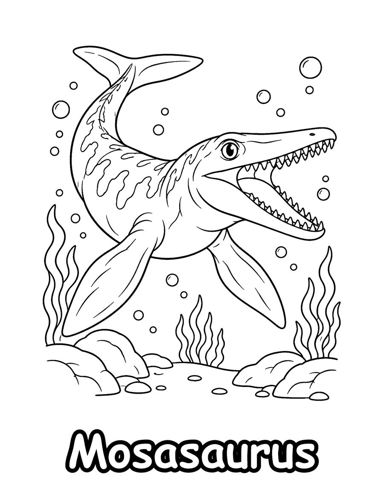
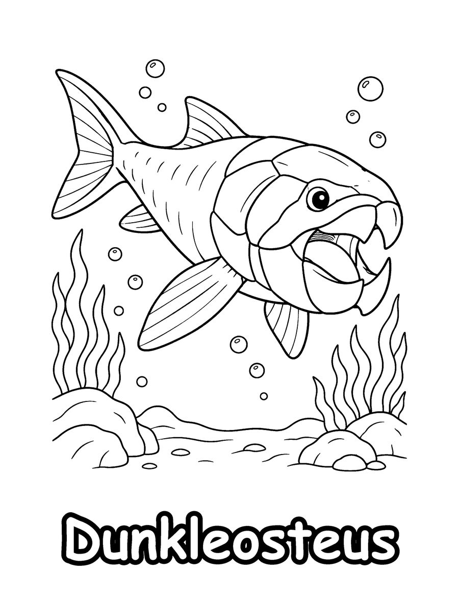

Megalodon, Mosasaurus and Dunkleosteus are the stars of these free prehistoric sea monster coloring pages. They come from Prehistoric Sea Monsters, a coloring book for ages 6 to 12 that shows 40 ancient ocean animals together with their real names, from giant sharks to armored fish and long-necked swimmers.
This is a good page set for kids who are curious about fossils and deep time. Megalodon was an enormous prehistoric shark, and Mosasaurus was a huge marine reptile that is often mistaken for a dinosaur, although it belonged to a different group. Dunkleosteus was a fish covered in heavy bony armor. Ask your child to compare how each animal is built for hunting, and look at the teeth, fins and body shapes in the drawings. The pages work for science units, homeschool lessons, museum visits or a rainy afternoon. Print on US Letter paper at 100% scale and color with markers or colored pencils. The full book has 40 ocean giants to color.
Your 3 free coloring pages

Mosasaurus
Download free page (PDF)
Dunkleosteus
Download free page (PDF)Printing tips
- Print at 100% scale on US Letter (8.5 x 11 in) paper. For A4, choose “Fit to page”.
- Use heavier paper (65 lb / 120 gsm or more) if you color with markers, so ink does not bleed through.
- Download the PDF first, then print from your PDF viewer for the sharpest lines.
Get all 40 pages
These 3 pages are a taste of Prehistoric Sea Monsters (Kids 6-12). The full coloring book has 40 pages, ready to print or color in a book.
More free coloring pages

Free Dinosaur Coloring Pages for Kids
Kids 3-6

Free Dolphin Coloring Pages for Kids
Kids 6-12

Free Whale and Sea Otter Coloring Pages
All ages

Free Coral Reef Coloring Pages for Adults
Teens & adults